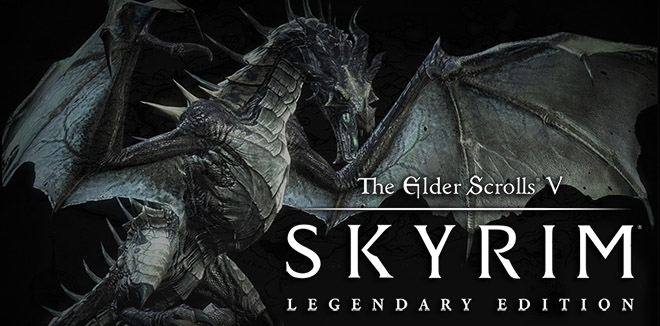
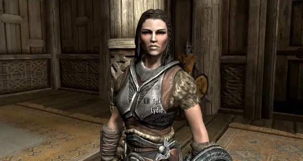
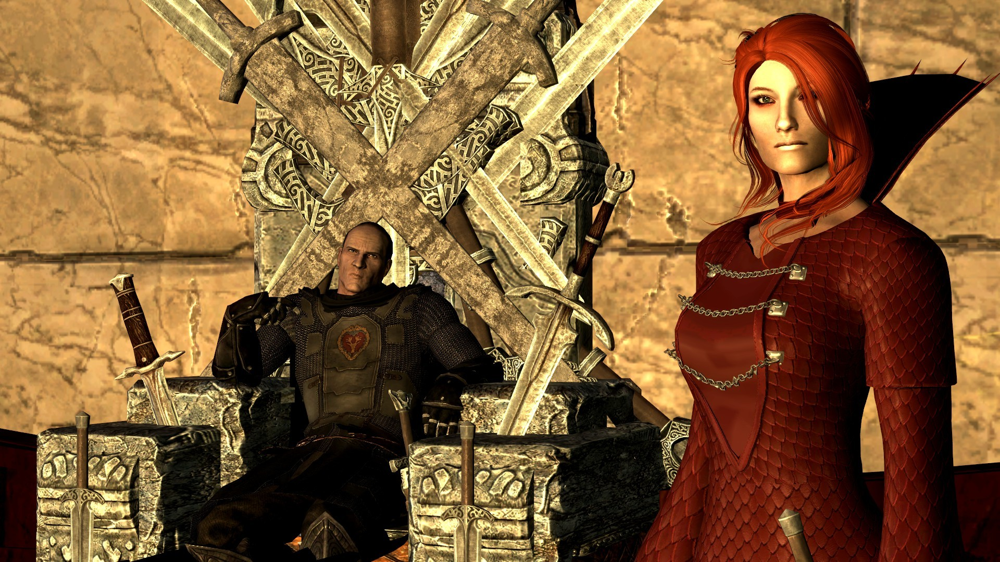
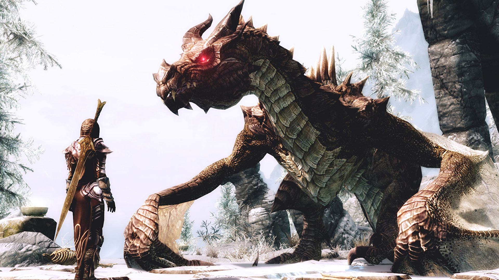

ТОП-4 интересных факта о Skyrim!
Первый факт: в 2012 году в одном из университетов США, в штате Техас ввели новый курс для студентов, который посвятили древним легендам Скандинавии и отдельно игре Skyrim. Курс проводится один раз в течение семестра.
Второй факт: один из персонажей игры – красавица Лидия, была поставлена на 12 место сайтом UGO в рейтинге «99 горячих вымышленных женщин».
Третий факт: Скайрим чуть было не состоялся из-за Игры престолов. Кажется, создатели Игры престолов подумали, что было бы неплохо иметь смежную игру, которая бы шла рука об руку с сериалом. Команда разработчиков Skyrim получила предложение сделать игру с учетом стиля шоу, и они были очень близки к тому, чтобы принять его. Но поскольку они чувствовали, что продолжать свое наследие и вкладывать средства в уже созданные творения были более важными, они решили, что последуют зову сердца и вместо этого создадут Скайрим.
Четвёртый факт: Как отмечают многие поклонники и официальные сайты, посвященные Скайриму, драконы, представленные в игре, на самом деле являются вивернами. Разница между драконом и виверной заключается в том, что у первого четыре ноги и два крыла, а у последней только две ноги. Возможно, это не такая уж большая разница, поскольку они выглядят почти одинаково, но для тех, кто хочет оставаться верным мифологии , стоит упомянуть эту деталь.
